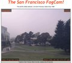

• • •
• • •
Trending in Science
Starship
52.2k Tuits
• • •
Trending in News
Joy Reid
3,579 Tuits
Trevor Noah’s exit won’t just hurt ‘The Daily Show.’ Here's why it’ll hurt all of late night TV.
US elections · LIVE
Massachusetts: Election news and updates
News · LIVE
This Map Shows Every State’s Favorite Kids' Halloween Movie In 2022

The world’s oldest webcam is still watching over San Francisco
• • •
Trending in Entertainment
Rose
232k Tuits